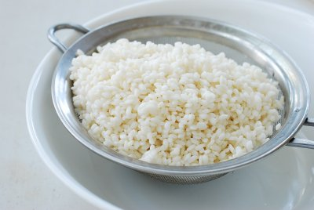
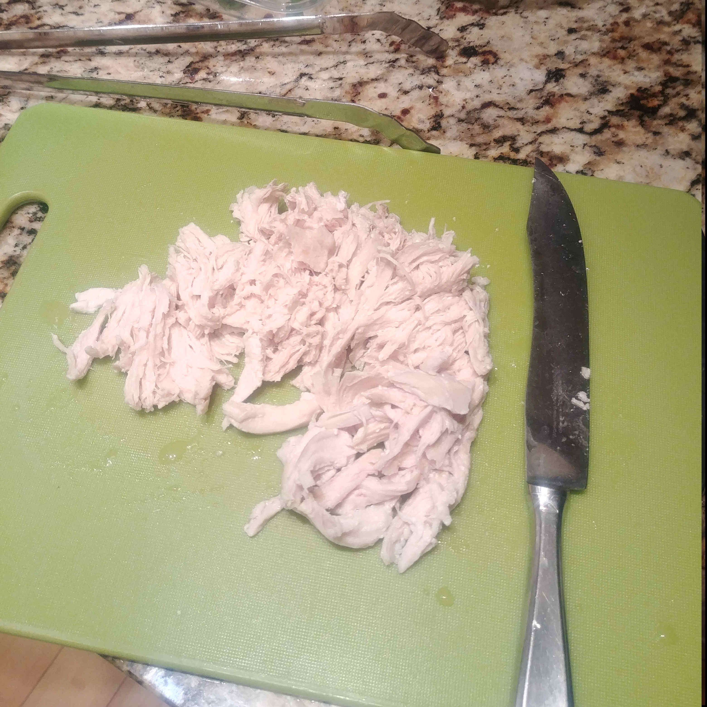
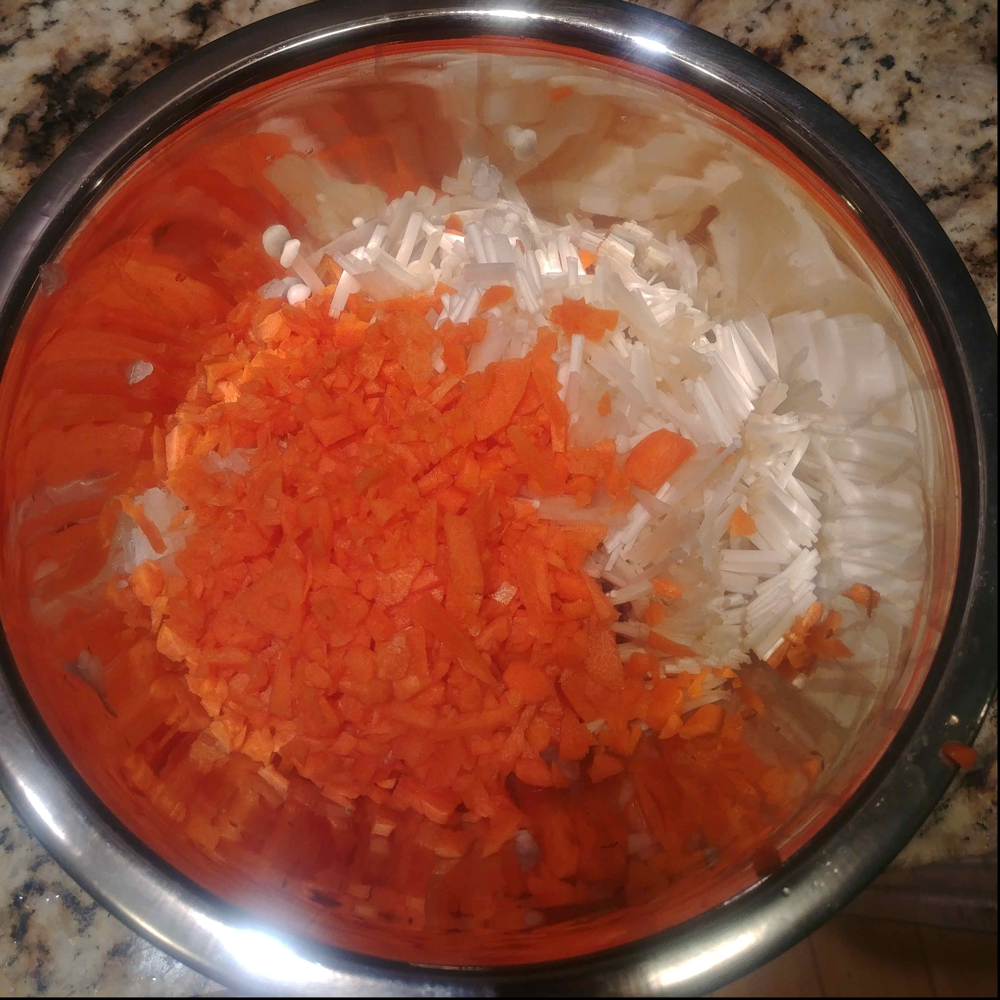

1. Rinse the Rice
Rinse the rice, soak it in water for 30 minutes then drain.
2. Cook the Chicken
Add water, chicken, bayleaf, and whole pepper and boil for 20 minutes. Drain water out and shred chicken breast.
3. Chop the vegetables
Finely chop all the vegetables.
4. Stir-fry the vegetables
Put all vegetbables into a pot, and stir-fry until vegetables are cooked.
5. Make the porridge
In the same pot, add rice, shredded chicken breast and pour chicken stock. Simmer until rice is fully cooked. Add salt as needed.
6. Garnish
Add chopped scallion and sesame seed for garnish.